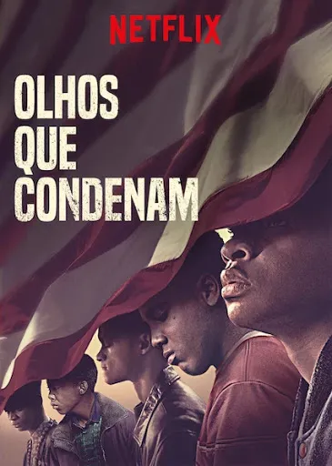
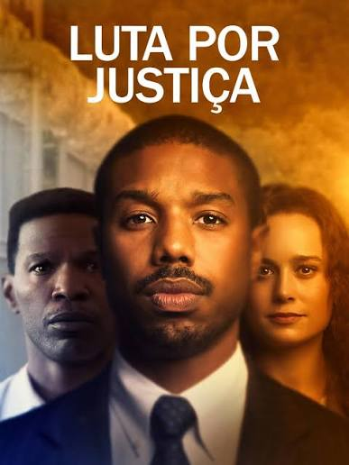
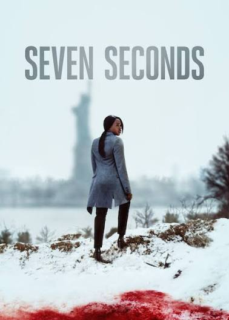

Olá Kasy prepare a pipoca e confira esta seleção de quatro filmes/series incríveis (onde 3 desses filmes foram escolhidos por IA), com histórias envolventes, personagens marcantes e momentos que vão despertar diferentes emoções. De dramas intensos a histórias surpreendentes, cada filme oferece uma experiência única. Escolha o seu favorito e aproveite !


